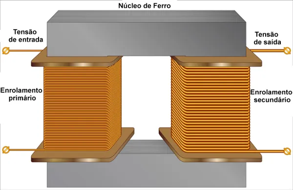
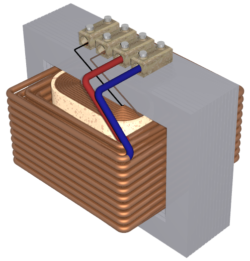

Um transformador é um dispositivo destinado a modificar os níveis de tensão e corrente elétrica, mantendo potência elétrica
praticamente constante, de um circuito a outro, modificando também os valores das impedâncias elétricas de um circuito elétrico.

Enrolamento - O enrolamento de um transformador é formado de várias bobinas que em geral são feitas de cobre eletrolítico.
Núcleo - esse em geral é feito de um material ferromagnético,

A potencia da bobina primária se conserva na segunda bobina
logo temos que
U1/V1 = U2/V2
onde U1 e V1 são tensão e quantidade de volta da bobina primaria
e U2 e V2 são tensão e quantidade de volta da bobina Secundaria
Atividade
1) Uma fonte de energia tensão de 127v com 138 voltas primeira bobina e 20 voltas na bobina secundaria. Qual a tensão de saida?
2) Uma fonte de energia com tensão de 3000v com 630 voltas no enrolamento primário qual a quantidade de voltas necessária para ter uma tensão
de 110v de saida no enrolamento secundário?
3) Qual a tensão de saida de uma bobina que tem tensaõ de entrada de 12v com 7 voltas no enrolamento primário e 890 voltas no
enrolamento secundário?
4) Qual a quantidade de volta necessária para um tranformador de bobina primaria que entra 220v com 230 voltas, transformar em
110v?
5) Qual seria a tensão de entrada em um trafo que na bobina de entrada tem 125 voltas e na de saida 333 voltas para que saia 1000v?